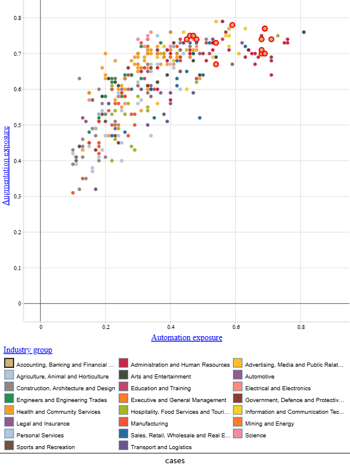
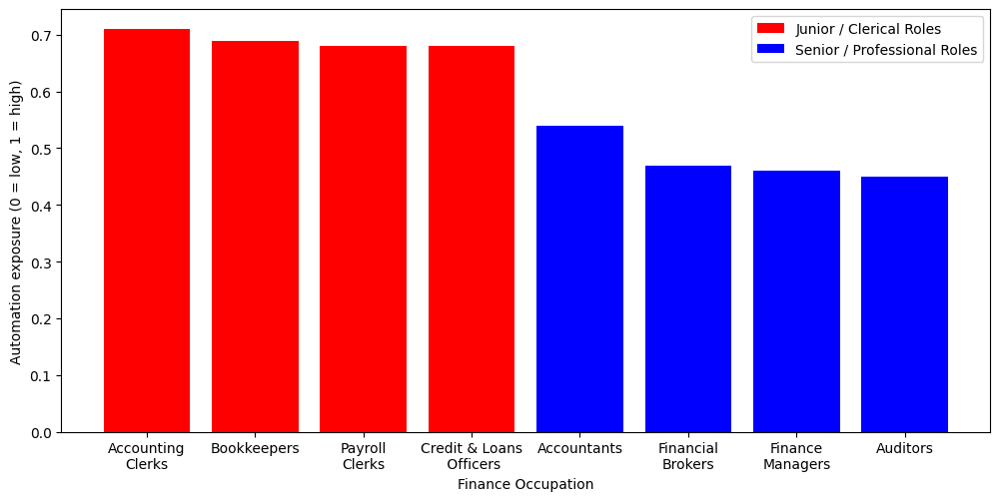

Year 12 Data Science
AI is not going to change
finance work.
It already has.
AI automation is concentrated in the junior, routine roles that train young workers to become experienced professionals. This is a pipeline problem, not only a job-loss problem.
Across Asia-Pacific, employers are already competing for workers with AI skills.
This Power BI chart, built from the Our World in Data dataset, shows the average share of all job postings that mention AI-related skills, broken down by country across Asia-Pacific across the available dataset period. These are live job advertisements that have already been published, not projections.
This chart is a regional average comparison, not a time series or a 2025-only view. The 7.4× figure comes from the underlying dataset tracking Australia's share over a decade. The chart here places Australia within its regional context, and where it sits matters for what comes next.
Singapore and Hong Kong lead the Asia-Pacific comparison, while Australia sits lower but still clearly within the regional AI hiring shift.
In the Asia-Pacific drill-down, Singapore has the highest average AI-related job-posting share at about 2.37%, followed by Hong Kong at about 2.13%. Australia sits below those leaders, at around 0.7% as a decade average on this measure, compared with 1.78% in 2025 alone, because the underlying time-series shows its AI-related job-posting share rose sharply over the decade. Australia does not lead the region, but it is clearly moving in the same direction.
By 2025, Australia's AI-related job-posting share reached 1.78% (roughly 1 in 56 job postings), after rising from 0.24% in 2014.
In 2014, Australia's share was 0.24%. By 2025 it reached 1.78%. That is a significant shift in what employers expect workers to know. This wider hiring trend sets the context for finance and procurement roles, where AI literacy is becoming part of the skills conversation.
The regional hiring data shows demand shifting, but it does not tell us which tasks employers expect AI to perform. The next section maps every major occupation by how much AI will automate its tasks versus how much it will augment the work that remains. Finance is already part of this shift. AI skills are appearing in current job advertisements, which means the change is already affecting the labour market.
Graph2.png is in
assets/images/

AI reshapes work in two ways at once. Finance sits in the high-exposure zone.
Automation replaces tasks. Augmentation changes them, making human judgement more powerful with AI support. This scatter chart, produced in CODAP from the Jobs and Skills Australia Generative AI Capacity Study, plots approximately 356 occupations on both dimensions simultaneously. The x-axis is automation exposure; the y-axis is augmentation exposure.
Most occupations in the economy sit above the diagonal line where augmentation equals automation, meaning AI augments more than it replaces across the economy. Finance is an exception because its automation exposure sits closer to its augmentation exposure than many other fields. This means AI is both assisting finance work and getting close to substituting parts of it.
Roles scoring above 0.5 on both axes face the steepest combined pressure, and many finance occupations cluster in or near that zone.
In the top-right corner of the scatter, both automation and augmentation forces apply at the same time. Workers in this zone need to adapt the tasks they perform and develop new AI-collaboration skills. Many finance occupations cluster in or near this high-exposure zone rather than sitting far from it.
The circled outliers are among the most AI-pressured occupations in the dataset, and finance contributes several.
These circled data points represent occupations where automation and augmentation exposure are both near the top of the scale. Multiple occupations from Accounting, Banking and Financial Services sit in this cluster, which reflects the task-intensive, rules-based nature of much finance work. That is exactly the profile AI processes most readily.
The scatter shows that finance is a high-risk sector on both dimensions, not just one. The scatter does not yet show where within finance the pressure is concentrated. Section 3 confirms that finance leads every other industry group in the JSA data, and Section 4 breaks that down by specific role. Finance faces pressure from both AI support of remaining tasks and substitution of routine ones.
Finance is not just one of many sectors at risk. The JSA data ranks it the most automation-exposed of all 23 industry groups.
The Jobs and Skills Australia Generative AI Capacity Study classifies every occupation by industry group and calculates average automation exposure scores. This Power BI chart ranks all 23 industry groups. Accounting, Banking and Financial Services reaches an average automation exposure score of approximately 0.60, placing it at the top of the distribution.
Finance scores higher than manufacturing, transport, and logistics, the sectors most people assume are most at risk from automation.
For Defence, this changes the usual framing around which workers face AI disruption. The conversation in government often focuses on physical and industrial work. The data shows that office-based, analytical work in finance carries equal or greater exposure. Drilling down within the finance group, Accounting Clerks reach an exposure score of approximately 0.71 and Auditors are lowest at approximately 0.45.
The earlier scatter showed that finance is also strongly exposed to augmentation, so the impact goes beyond substitution alone.
This Power BI graph focuses on automation, but the previous CODAP scatter adds the second dimension: finance is also strongly exposed to augmentation. Together, the two visuals show that finance workers face pressure from both directions. Some routine tasks are technically substitutable, while the work that remains is likely to become more AI-supported. For Defence finance, this means workers will need to verify AI outputs, supervise AI-assisted analysis, and apply professional judgement.
"If AI continues advancing at the pace it is now, I can see it taking over a lot of analytical, administrative, and office-type work."— Shiva Sapkota, Australian Defence Force, interviewed 2026.
Industry-level data sets the context. The next section zooms inside finance, showing the eight specific occupations that form the core of a finance and procurement workforce and the clear divide in exposure between junior and senior roles. Finance ranks highest of all 23 industry groups in the JSA dataset, so this is not a random sector to examine.
Graph4.png is in
assets/images/

The divide between junior and senior finance roles is the central finding in the occupation-level data.
This bar chart, produced from the Jobs and Skills Australia Generative AI Capacity Study data in Google Colab, plots eight finance occupations by automation exposure score. The split between red (junior/clerical) and blue (senior/professional) bars tells the core story of where the risk sits.
A high automation exposure score of 0.71 means Accounting Clerks carry the greatest concentration of technically substitutable tasks among the selected finance roles analysed here. This does not mean that 71% of Accounting Clerk jobs will disappear overnight. It measures how much of the work profile is technically within reach of current AI systems.
Accounting Clerks (0.71), Bookkeepers (0.69), Payroll Clerks (0.68), and Credit & Loans Officers (0.68) all score 0.68 or above.
These four roles define the clerical entry level of the finance workforce. They handle high-volume, rules-based transactions, which is precisely the task profile that AI systems are designed to process.
This pressure is already visible in real hiring decisions. Fortune has reported that major Wall Street firms are weighing cuts to junior analyst hiring of up to two-thirds as banks lean more heavily on AI for the routine analytical work that once defined those roles (Lake, 2025). The task profile driving those cuts is identical to the one the exposure data scores most exposed.
Senior roles score lower, but they are not low. Accountants reach 0.54; Finance Managers and Auditors sit at 0.45–0.46.
A score of 0.54 for Accountants is still high by cross-sector standards. Senior roles score lower than junior roles, but they are not without risk. The difference is that junior work is more likely to be substituted immediately, while senior work is more likely to be reshaped gradually. Senior finance work requires judgement, accountability and professional discretion. These are qualities that are harder for AI to replicate, but they do not remove all exposure.
These four high-scoring roles are common early-career pathways into finance. If those roles automate, they do not only disappear as jobs. They also take their training function with them. Junior and clerical finance roles carry the sharpest automation exposure in this dataset, and Section 5 examines whether that is already affecting entry-level opportunities.
The real issue is not just which finance roles AI can perform. It is whether entry-level pathways into finance are under pressure.
Using Jobs and Skills Australia data, this Power BI chart groups finance occupations by their entry-level job advertisement share and automation exposure band. It treats occupation data as a career pathway map rather than just a risk inventory. The question this chart addresses is whether the roles with the highest automation exposure also show fewer entry-level job postings.
Across finance occupations, automation exposure and entry-level job ad share move in opposite directions.
Across finance occupations, automation exposure and entry-level job ad share tend to move in opposite directions. The grouped Power BI view shows it clearly: the high entry-level share band averages the lowest automation exposure, while the medium and low entry-level bands both sit higher. In other words, the roles most exposed to AI are generally not the ones offering the strongest entry-level openings for young workers, which is the core of the pipeline concern.
If junior roles automate before young workers have moved up, the profession loses the training ground that makes senior professionals.
The roles most likely to be automated (Accounting Clerks, Bookkeepers, Payroll Clerks) are also the roles that teach young finance workers the fundamentals of the profession. Automating those roles does not only reduce headcount. It also removes the learning pathway through which junior workers progress to senior ones. If fewer junior roles remain, young workers may have fewer opportunities to gain the experience needed for senior positions.
Peer-reviewed research supports this finding. Pokhrel et al. (2025) identify clerical, administrative, financial and customer service jobs as among the occupations most vulnerable to generative AI disruption. Their systematic literature review also explains that AI usually changes work through partial automation and job reconfiguration, rather than simple whole-job replacement. That matches the JSA data in this story: junior finance roles carry higher automation exposure because they contain more routine, rules-based tasks, while senior roles are more likely to be reshaped around judgement, accountability and AI-assisted decision-making. The implication is that the risk extends beyond job loss to the weakening of the training pathway through which junior workers normally progress to senior roles.
"In many industries, younger employees traditionally start by doing simpler or more repetitive tasks, and through that process they learn, gain experience, and gradually progress into more advanced roles. If AI replaces too many of those early-stage responsibilities… we may face a shortage of experienced professionals five or ten years down the track."— Shiva Sapkota, Australian Defence Force, interviewed 2026.
This is what the previous sections have been building toward. AI may not immediately replace experienced Defence finance professionals. But if it automates the entry-level work that trains the next generation, the profession faces a pipeline problem, not only a job-loss problem. Section 6 shows what the data says about how different finance roles should respond, and why the roles most exposed to automation are not necessarily the best starting points for young workers entering the field.
This final chart compares two pressures (automation exposure and skill-change pressure) across finance role types. They move in opposite directions.
This bar chart, built from Jobs and Skills Australia skill-change data, groups finance occupations into role types and compares two scores for each: automation exposure (how much of the work AI can technically perform) and skill-change pressure (how urgently those roles need to develop new capabilities). This is where the two pressures come together in the clearest way across the whole story.
Clerical and processing roles average approximately 0.67 on automation exposure but only around 0.48 on skill-change pressure.
High automation exposure with low skill-change pressure means these roles face the greatest substitution risk while their skill profile is evolving the least rapidly. The work is being automated, and the workers in those roles are not currently being pushed toward the new capabilities that would help them adapt. This points to a training and transition gap that warrants attention.
Senior and management roles average approximately 0.50 on automation exposure but 0.61 on skill-change pressure. These two scores move in opposite directions as roles become more senior.
Where automation exposure is lower, skill-change pressure is higher. Senior finance and management roles face lower automation risk, but they are being reshaped. The work that remains increasingly demands judgement, AI output verification, professional accountability, and AI-supported decision-making. Those capabilities are in higher demand at the senior level precisely because AI cannot fully replicate them.
The data does not suggest AI will eliminate finance work. The finding is more specific: AI is automating the routine work first, and the routine work is where the profession trains its next generation. A Defence financial contractor with direct experience of AI in government procurement was direct about this: "you still can't rely 100% on AI — at the end of the day, humans are still responsible for the work and the outcomes AI produces." That accountability (the capacity to direct, verify and own AI-supported decisions) is exactly what the skill-change data shows will be in higher demand. The pipeline that develops it starts at entry level. For Defence finance and procurement, protecting that pathway is not only a workforce numbers concern. It is a question of whether the profession can keep developing people with the judgement and experience AI cannot replicate.
One Last Thing
I designed this story in Figma, but I did not code the webpage myself from scratch. I used AI to help turn the prototype into the HTML, CSS and JavaScript you just experienced.
In the future, I want to enter the tech industry, specifically cybersecurity, and possibly the Australian Signals Directorate (ASD). AI could make me faster and more capable than ever before. But it could also perform the same beginner tasks I would normally use to prove myself, learn and earn my place.
This website shows both sides of that future. AI helped me build something I could not have produced alone in the same time. But if it can do that for me now, what will it be able to do by the time I enter the workforce? How will this affect my ability to get my first tech job? Will I ever get a tech job?